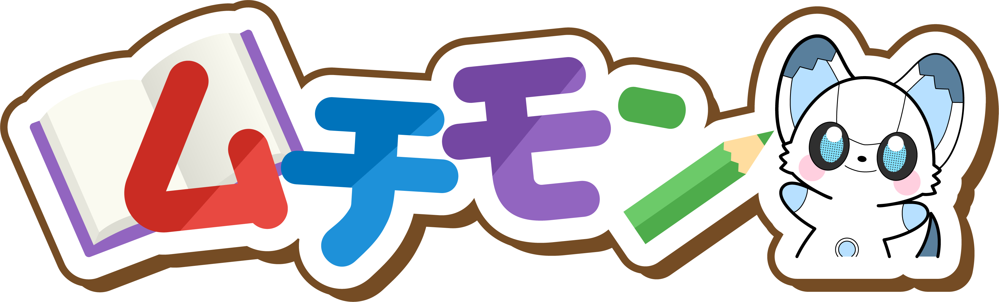
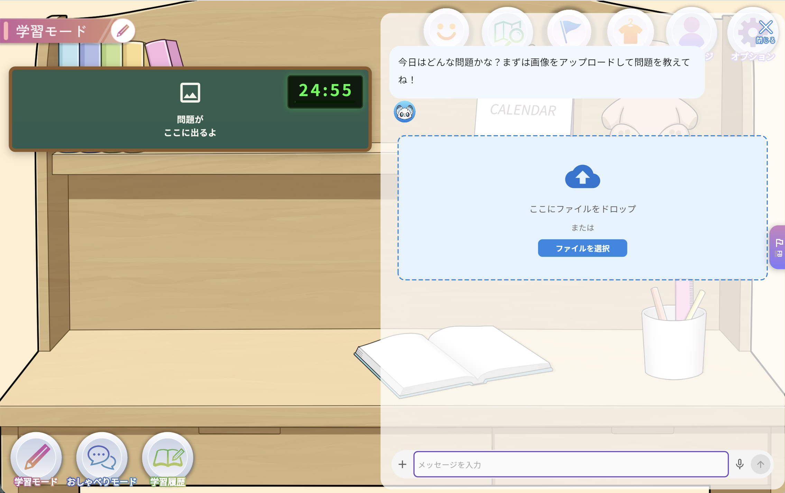
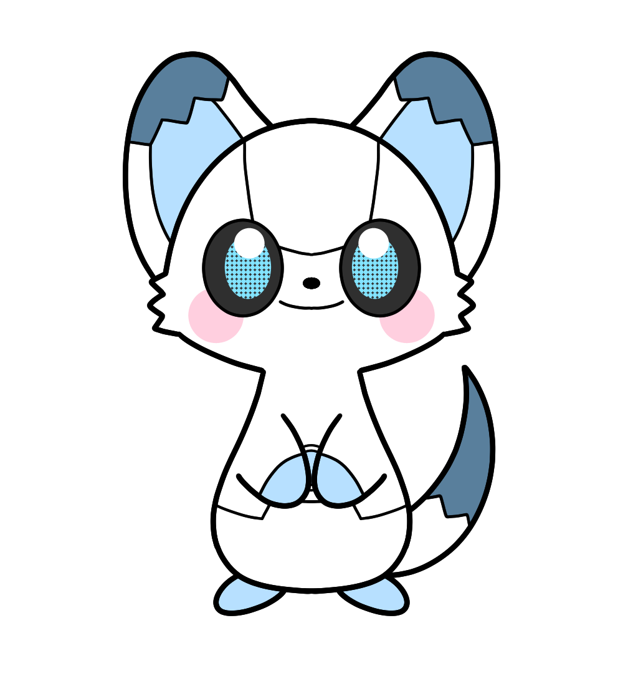
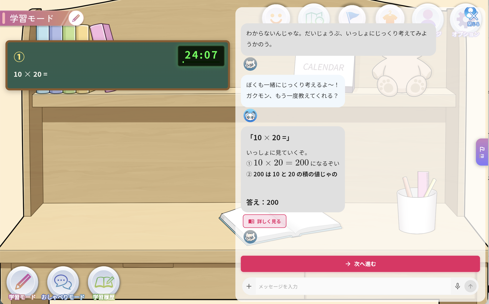

毎日「勉強しなさい」と言ってしまう
声をかけるほど、子どもの表情が重くなる。家庭学習の入口で親子の負担が増えてしまいます。

サービスリリース前 公式LINE先行案内
小学生の算数に対応。問題を撮影するだけで、ムチモンが声をかけながら、ヒント、解説、類題、学習ログまでつなげます。


リリース前に登録して、公開日や使い方の案内を受け取れます。
公式LINEに登録するParent Pain
声をかけるほど、子どもの表情が重くなる。家庭学習の入口で親子の負担が増えてしまいます。
家事や仕事の途中で聞かれても、丁寧に説明する時間を取りにくい場面があります。
答えを見るだけでは理解が定着しづらく、次の似た問題でまた止まってしまいます。
Why Muchimon
教材を全部置き換えるのではなく、毎日の宿題や問題演習で止まったところに寄り添います。
毎日の声かけを、キャラクターとの会話に置き換えます。親子の空気を穏やかに保ちやすい設計です。
保護者がすぐ手を離せないときも、ムチモンが問題の入口を一緒に探します。
まずは小学生の算数に対応。今後のアップデートで対応範囲を順次広げます。
How it works
小学生の算数で手が止まった問題を、スマートフォンでそのまま送れます。
いきなり答えではなく、「どこで迷った？」と小さなヒントから一緒に考えます。
考え方を分解しながら、子どもが自分の言葉で納得できるように支えます。
似た問題にも取り組み、「わかった」を「できた」につなげます。
取り組みの記録を残し、保護者が褒めるきっかけにできます。
App Experience
子どもがひとりで抱え込まないように、まずは「何がわからないか」を一緒に見つけます。保護者は学習ログを通じて、取り組みを見守れます。

Release Notice
正式リリースのお知らせ、使い方、利用開始方法を公式LINEでお届けします。特別な手続きは不要です。
Price
正式リリースや利用開始に関する案内は、公式LINEでお知らせします。
塾・教育事業者向けの利用は個別にご相談ください。
sales@muchimon.comSafety
問題画像を使うサービスのため、アップロード画像の扱いを利用規約とプライバシーポリシーで確認できるようにします。
未成年の利用には保護者の確認を前提とし、利用開始時にも同意導線を設けます。
学習ログは、保存範囲と利用目的を明記。見守りに必要な情報だけを扱います。
FAQ
はい。公式LINEに登録すると、リリース通知や使い方の案内を受け取れます。
個人・家庭利用は月額2,980円（税込）です。法人利用は sales@muchimon.com へお問い合わせください。
現在は小学生の算数に対応予定です。今後のアップデートで算数以外にも順次対応します。
問題画像、個人情報、学習ログは利用規約とプライバシーポリシーに従って扱います。未成年の利用は保護者確認を前提とします。